第十讲 列方程解应用题
列方程解应用题是用字母来代替未知数，根据等量关系列出含有未知数的等式，也就是列出方程，然后解出未知数的值.列方程解应用题的优点在于可以使未知数直接参加运算.解这类应用题的关键在于能够正确地设立未知数，找出等量关系从而建立方程.而找出等量关系又在于熟练运用数量之间的各种已知条件.掌握了这两点就能正确地列出方程。
列方程解应用题的一般步骤是：
①弄清题意，找出已知条件和所求问题；
②依题意确定等量关系，设未知数x；
③根据等量关系列出方程；
④解方程；
⑤检验，写出答案。
例1 列方程，并求出方程的解。
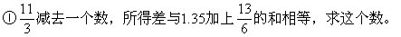
解：设这个数为x.则依题意有
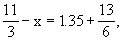
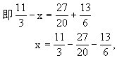
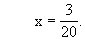
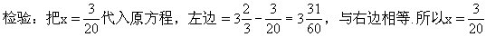
是原方程的解。
解：设某数为x.依题意，有：
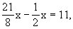
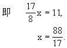
例2 已知篮球、足球、排球平均每个36元.篮球比排球每个多10元，足球比排球每个多8元，每个足球多少元？
分析 ①篮球、足球、排球平均每个36元，购买三种球的总价是：36×3=108（元）。
②篮球和足球都与排球比，所以把排球的单价作为标准量，设为x。
③列方程时，等量关系可以确定为分类购球的总价=平均值导出的总价。
解：设每个排球x元，则每个篮球（x+10）元，每个足球（x+8）元.依题意，有：
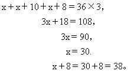
答：每个足球38元。
例3 妈妈买回一筐苹果，按计划天数，如果每天吃4个，则多出48个苹果，如果每天吃6个，则又少8个苹果.问：妈妈买回苹果多少个？计划吃多少天？
分析1 根据已知条件分析出，每天吃苹果的个数及吃若干天后剩下苹果的个数是变量，而苹果的总个数是不变量.因此列出方程的等量关系是苹果总个数=苹果总个数.方程左边，第一种方案下每天吃的个数×天数+剩下的个数，等于右边，第二种方案下每天吃的个数×天数-所差的个数。
解：设原计划吃x天。
4x＋48＝6x-8
2x＝56
x＝28。
苹果个数：4×28＋48=160（个），
或：6×28-8＝160（个）。
答：妈妈买回苹果160个，原计划吃28天。
分析2 列方程解等量关系确定为计划吃的天数=计划吃的天数。
解：设妈妈共买回苹果x个。
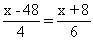
4x+32＝6x-288
2x＝320
x＝160。
（160-48）÷4=28（天）.或
（160＋8）÷6=28（天）。
答：妈妈买回160个苹果，原计划吃28天。
例4 甲、乙、丙、丁四人共做零件270个.如果甲多做10个，乙少做10个，丙做的个数乘以2，丁做的个数除以2，那么四人做的零件数恰好相等.问：丙实际做了多少个？（这是设间接未知数的例题）
分析 根据“那么四个人做的零件数恰好相等”，把这个零件相等的数设为x，从而得出：
甲+10=乙-10=丙×2=丁÷2＝x。
根据这个等式又可以推出：甲+10＝x，（甲=x-10）；
乙-10＝x，（乙=x+10）；
丁÷2=x，（丁=2x）。
又根据甲、乙、丙、丁四人共做零件270个，可以得到一个方程，它的左边表示零件的总个数，右边也表示零件的总个数。
解：设变换后每人做的零件数为x个。
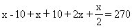
2x+2x+x+4x＝540
9x＝540
x＝60。
∵丙×2＝60，∴丙=30。
答：丙实际做零件30个。
例5 某图书馆原有科技书，文艺书共630本，其中科技书占20％.后来又买进一些科技书，这时科技书占总书数的30％.买进科技书多少本？
分析 依题意，文艺书的本数没有变.如果设买进科技书x本，那么，原来的本数+x本=增加后的总本数.文艺书占增加后总本数的70％，相当于原有书总数的80％，所以，增加后总本数×70％=原来总本数×80％，即原先的文艺书本数=后来的文艺书本数。
解：设买进科技书x本。
（630＋x）×（1-30％）=630×（1-20％）
441+70％x＝504
70％x＝63
x＝90。
答：买进科技书90本。
例6 一块长方形的地，长和宽的比是5∶3，长比宽多24米，这块地的面积是多少平方米？
分析 要想求这块地的面积，必须先求出长和宽各是多少米.已知条件中给出长和宽的比是5∶3，又知道长比宽多24米.如果把宽设为x米，则长为（x+24）米，这样确定方程左边表示长与宽的比等于右边长与宽的比，再列出方程。
解：设长方形的宽是x米，长是（x+24）米。
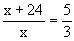
5x＝3x+72
2x＝72
x＝36。
x＋24＝36＋24=60，60×36=2160（平方米）。
答：这块地的面积是2160平方米.
例7 某县农机厂金工车间有77个工人.已知每个工人平均每天可以加工甲种零件5个或乙种零件4个，或丙种零件3个。但加工3个甲种零件，1个乙种零件和9个丙种零件才恰好配成一套.问：应安排生产甲、乙、丙种零件各多少人时，才能使生产的三种零件恰好配套？
分析 如果直接设生产甲、乙、丙三种零件的人数分别为x人、y人、z人，根据共有77人的条件可以列出方程x+y＋z=77，但解起来比较麻烦。
如果仔细分析题意，会发现除了上面提到的加工甲、乙、丙三种零件的人数这三个未知数外，还有甲、乙、丙三种零件的各自的总件数.而题目中又有关于甲、乙、丙三种零件之间装配时的内在联系，这个内在联系可以用比例关系表示，而乙种零件件数又在中间起媒介作用.所以如用间接未知数，设乙种零件总数为x个，为了配套，甲种、丙种零件件数总数分别为3x个和9x个，再根据生产某种零件人数=生产这种零件的个数÷工人劳动效率，可以分别求出生产甲、乙、丙种零件需安排的人数，从而找出等量关系，即按均衡生产推算的总人数=总人数，列出方程。
解：设加工乙种零件x个，则加工甲种零件3x个，加工丙种零件9x个。
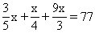
12x＋5x+60x＝1540
77x＝1540，
x＝20。
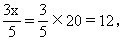
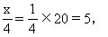
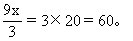
答：应安排加工甲、乙、丙三种零件工人人数分别为12人、5人和60人.